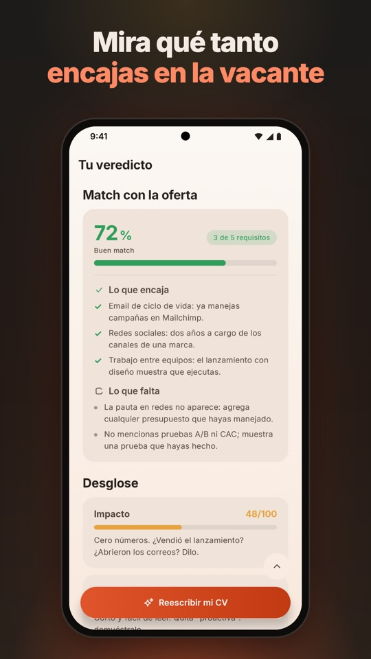
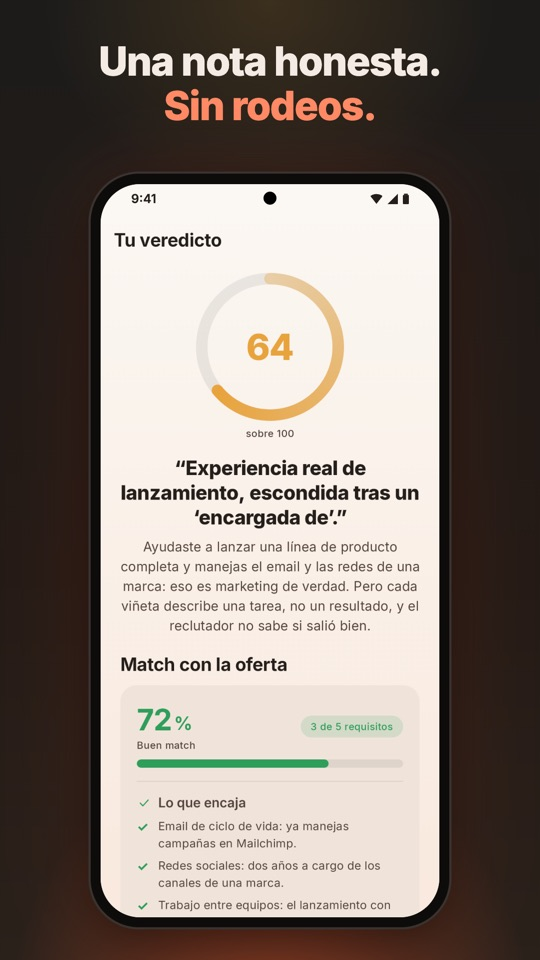
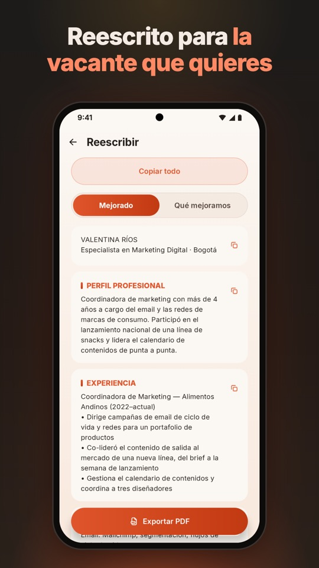
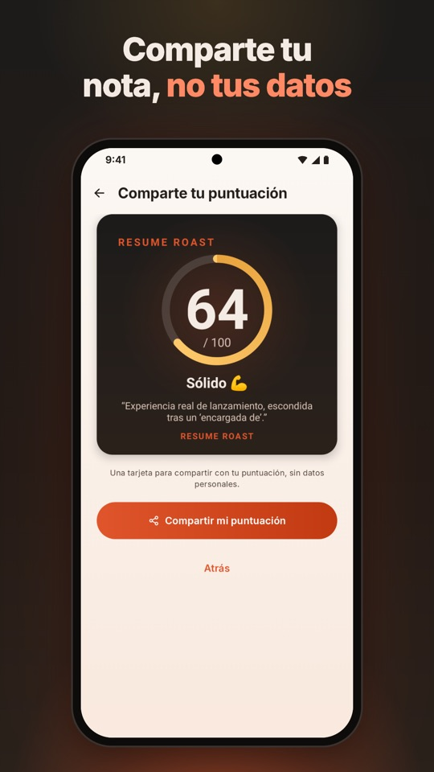

Resume Roast Disponible
Resume Roast Disponible
Para quienes buscan trabajo y quieren la verdad sobre su CV
Tu CV, sin filtros.
La IA que te dice lo que los reclutadores solo piensan. Pega tu CV, o sube un PDF, un Word o una foto, y recibe un veredicto honesto en segundos. Con humor cuando ayuda, nunca cruel, siempre útil.
Próximamente en App Store · ¿Tienes iPhone? Te avisamos
Compartir por WhatsApp

Resume Roast
Lo que hace por ti
Un puntaje honesto
Puntaje sobre 100 con detalle por sección, y las red flags que un reclutador ve en segundos.
Compáralo con una vacante real
Pega la oferta y mira qué encaja, qué falta, y reescribe tu CV para esa vacante. Nunca inventa experiencia.
Un PDF que pasa los filtros
Exporta un PDF con texto seleccionable que leen los sistemas de selección (ATS), con tres plantillas modernas.
Sin suscripción
Tus primeros 3 créditos son gratis. Un crédito es un análisis o una reescritura. ¿Necesitas más? Compras un paquete una vez, sin cuenta.
Cómo funciona
Pega o sube tu CV
Texto, PDF, Word o una foto. Si tienes la oferta, agrégala.
Recibe el veredicto
Puntaje sobre 100, detalle por sección y las red flags. Con la oferta, ves también qué tanto encajas.
Arréglalo y expórtalo
Reescribe tu CV para esa vacante, sin inventar nada, y descárgalo en un PDF que leen los filtros.
Así se ve


Preguntas frecuentes
¿Cuánto cuesta?
Empiezas con 3 créditos gratis. Un crédito es un análisis o una reescritura, y si la IA falla te lo devolvemos. ¿Necesitas más? Compras un paquete una sola vez: sin suscripción, sin anuncios y sin cuenta.
¿La IA inventa experiencia?
No. La reescritura ordena y mejora lo que ya tienes para esa vacante, pero nunca inventa trabajos, cargos ni experiencia.
¿Qué pasa con mi CV?
Para analizarlo, el texto de tu CV pasa por nuestro servidor y por un proveedor de inteligencia artificial, y no se guarda. Tu historial, tu foto y tus PDF se quedan en tu celular. Los detalles están en la política de privacidad.
¿En qué idiomas funciona?
La app está en español y en inglés, y tu CV puede salir en español, inglés, portugués, francés, italiano o alemán.
¿Qué es un PDF que pasa los filtros (ATS)?
Muchas empresas usan programas que leen tu CV antes que una persona. Resume Roast exporta un PDF con texto seleccionable que esos programas pueden leer, con tres plantillas modernas.
¿Está en iPhone?
Hoy está en Google Play. La versión para iPhone viene pronto: escríbenos y te avisamos.
Deja de adivinar qué le falta a tu CV.
Descarga Resume Roast en Google Play y recibe tu primer veredicto en segundos.
Próximamente en App Store · ¿Tienes iPhone? Te avisamos